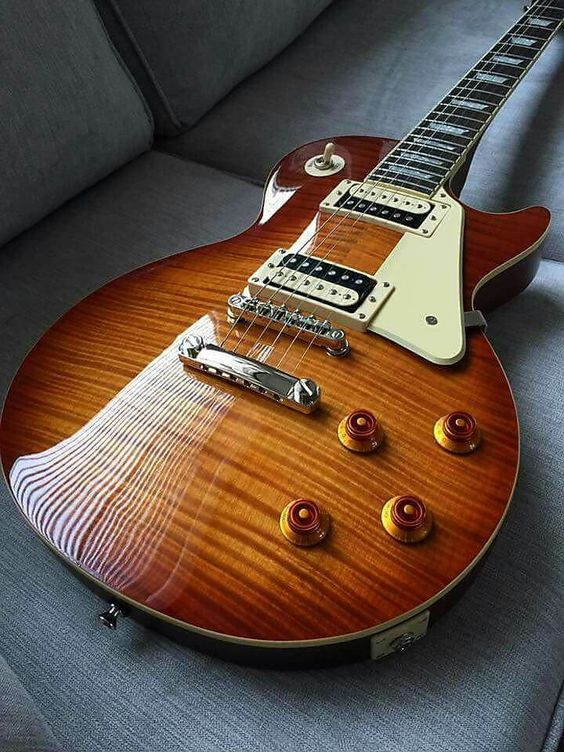
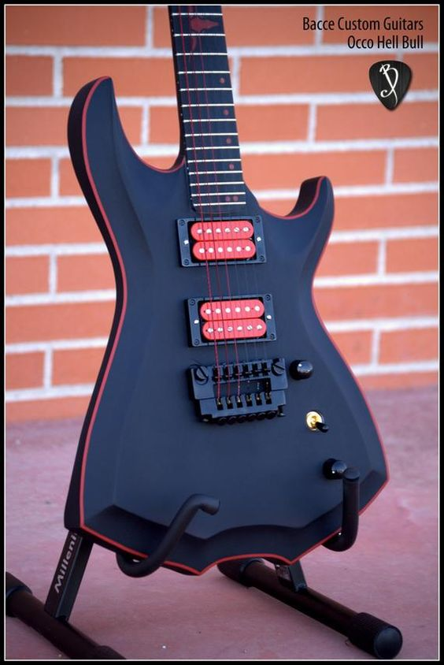
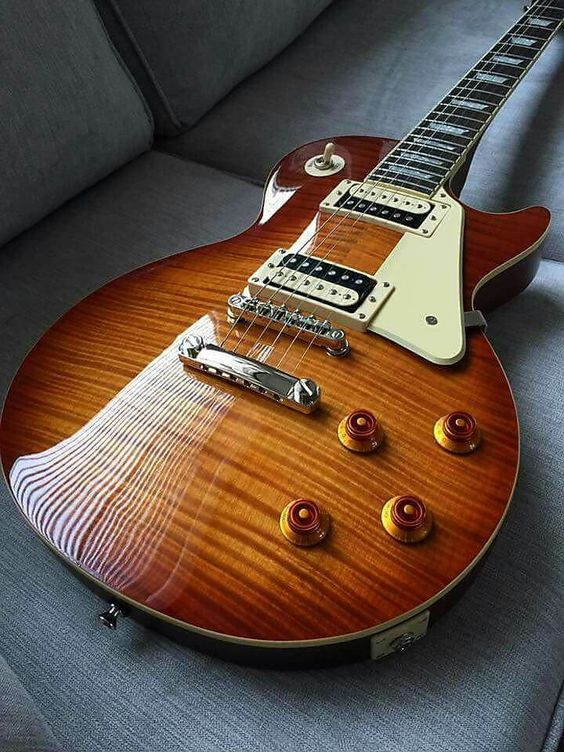
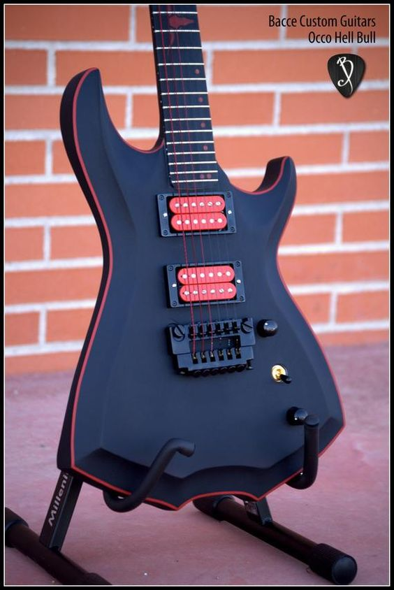
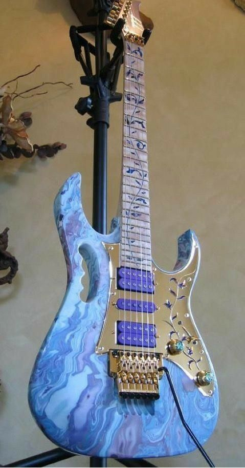
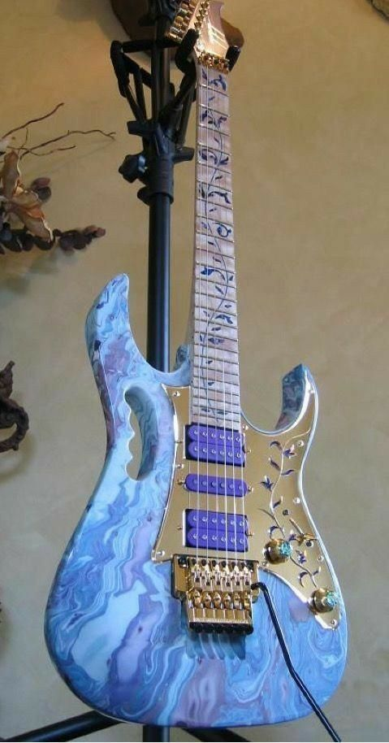

ТИПЫ ЭЛЕКТРОГИТАР
В данной статье речь пойдет о самых известных и часто встречающихся формах и модификациях электрогитар.
Stratocaster
Самая популярная, часто встречающаяся и скопированная во множестве реплик форма гитары. Трудно перечислить все страны, в которых производятся Стратокастеры, и ещё труднее было бы перечислить все наименования марок электрогитар данной формы. Классический же, оригинальный Фендер Стратокастер выпускают в Соединенных Штатах, на инструмент ставят три звукоснимателя типа «сингл» и «машинку» Vintage Tremolo. Страт обладает особым, узнаваемым «стеклянным» звучанием. Зачастую эту электрогитару можно увидеть в руках хард-рок-, инди-, поп-рок-гитаристов
Telecaster
 Не менее легендарная модель от фирмы Fender, даже более «древняя», чем Стратокастер. Дизайн Телекастера нарочито прост, он выглядит словно выпиленный из одного цельного куска древесины – что неудивительно, учитывая, что дека его мастерится именно по такой технологии. Чаще на Телеке стоят два сингла, однако есть и модификации с хамбакерами. Материал деки – ясень или ольха. Звучание, как правило, очень приятное на чистом звуке и несколько «стеклянное» на овердрайве.
Не менее легендарная модель от фирмы Fender, даже более «древняя», чем Стратокастер. Дизайн Телекастера нарочито прост, он выглядит словно выпиленный из одного цельного куска древесины – что неудивительно, учитывая, что дека его мастерится именно по такой технологии. Чаще на Телеке стоят два сингла, однако есть и модификации с хамбакерами. Материал деки – ясень или ольха. Звучание, как правило, очень приятное на чистом звуке и несколько «стеклянное» на овердрайве.
Les Paul
 Gibson Les Paul – ещё одна знаменитая модель электрогитары, задавшая одно из направлений в движении гитарной промышленности. Лес Пол легко узнаваем по своей форме, ассоциирующейся с женской талией, характерным звукоснимателям и корпусу, собранному из дорогого красного дерева. Эта гитара многими признается самой универсальной, и по этой причине часто применяется в студиях звукозаписи. Les Paul широко копируется во всём мире, порой лицензионно, а порой и не очень (последним особенно грешат китайские производители).
Gibson Les Paul – ещё одна знаменитая модель электрогитары, задавшая одно из направлений в движении гитарной промышленности. Лес Пол легко узнаваем по своей форме, ассоциирующейся с женской талией, характерным звукоснимателям и корпусу, собранному из дорогого красного дерева. Эта гитара многими признается самой универсальной, и по этой причине часто применяется в студиях звукозаписи. Les Paul широко копируется во всём мире, порой лицензионно, а порой и не очень (последним особенно грешат китайские производители).
Superstrat
 Суперстраты представляют собой обширное семейство гитар, состоящее из множества моделей разных производителей. На вид они несколько напоминают Стратокастеры, но имеют большое количество конструктивных отличий в «звучках», форме головки грифа, струнодержателе, древесине корпуса, грифа и накладки.
Некоторые производители сделали себе имя на таких инструментах – примером могут служить Ibanez, Kramer, Cort. А первой, кто освоил дизайн Суперстрат, стала фирма Jackson. В первоначальном варианте это были просто копии Stratocaster с усложненной фурнитурой и из более ценной древесины, в дальнейшем изменения коснулись и формы корпуса.
Суперстраты представляют собой обширное семейство гитар, состоящее из множества моделей разных производителей. На вид они несколько напоминают Стратокастеры, но имеют большое количество конструктивных отличий в «звучках», форме головки грифа, струнодержателе, древесине корпуса, грифа и накладки.
Некоторые производители сделали себе имя на таких инструментах – примером могут служить Ibanez, Kramer, Cort. А первой, кто освоил дизайн Суперстрат, стала фирма Jackson. В первоначальном варианте это были просто копии Stratocaster с усложненной фурнитурой и из более ценной древесины, в дальнейшем изменения коснулись и формы корпуса.
SG
 Рогатый Gibson SG – тот самый инструмент, на котором запиливает свои сольные партии гитарист AC/DC Ангус Янг. Кроме формы корпуса, отличается от Les Paul ещё и тем, что дека SG производится из одной цельной доски красного дерева, а не склеивается из нескольких отдельных элементов. Собственно, и сами буквы SG расшифровываются как solid guitar (цельная гитара). Пуговица для ремня у этого инструмента располагается не на окончании «рога» корпуса, а с обратной стороны деки в верхней части.
Рогатый Gibson SG – тот самый инструмент, на котором запиливает свои сольные партии гитарист AC/DC Ангус Янг. Кроме формы корпуса, отличается от Les Paul ещё и тем, что дека SG производится из одной цельной доски красного дерева, а не склеивается из нескольких отдельных элементов. Собственно, и сами буквы SG расшифровываются как solid guitar (цельная гитара). Пуговица для ремня у этого инструмента располагается не на окончании «рога» корпуса, а с обратной стороны деки в верхней части.
Explorer
 Форма корпуса Gibson Explorer очертаниями несколько напоминает звезду. Внешне угловатые гитары этой формы, тем не менее, вполне удобны в игре, чему способствует довольно легкий гриф. Характерной чертой Эксплорера стал также переключатель «звучков» – у электрогитар этой конструкции он вынесен аж на угол деки.
Форма корпуса Gibson Explorer очертаниями несколько напоминает звезду. Внешне угловатые гитары этой формы, тем не менее, вполне удобны в игре, чему способствует довольно легкий гриф. Характерной чертой Эксплорера стал также переключатель «звучков» – у электрогитар этой конструкции он вынесен аж на угол деки.
Flying V
 На Gibson Flying V едва ли не молятся многие гитаристы, играющие металл. Наименование модели говорит само за себя – это легкая летящая стрела с головкой грифа в виде острого наконечника. Многие знаменитые музыканты с помощью этой электрогитары отыскали свой новый образ – и среди них Джимми Хендрикс, которому принадлежит инструмент, изображенный на фотографии.
На Gibson Flying V едва ли не молятся многие гитаристы, играющие металл. Наименование модели говорит само за себя – это легкая летящая стрела с головкой грифа в виде острого наконечника. Многие знаменитые музыканты с помощью этой электрогитары отыскали свой новый образ – и среди них Джимми Хендрикс, которому принадлежит инструмент, изображенный на фотографии.
Dean ML
.png) Это, наверное, самый известный тип дизайна Dean. Его форма похожа на переднюю половину Gibson Explorer совмещённую с задней половиной Gibson Flying V. Масса гитары распределена по большей, чем обычно, площади, что значительно увеличивает сустейн. V-образная форма головки грифа, крепление струн в бридже имеет 3 типа: Floyd Rose, сквозное крепление и Tune-o-matic.
Это, наверное, самый известный тип дизайна Dean. Его форма похожа на переднюю половину Gibson Explorer совмещённую с задней половиной Gibson Flying V. Масса гитары распределена по большей, чем обычно, площади, что значительно увеличивает сустейн. V-образная форма головки грифа, крепление струн в бридже имеет 3 типа: Floyd Rose, сквозное крепление и Tune-o-matic.


 



 
